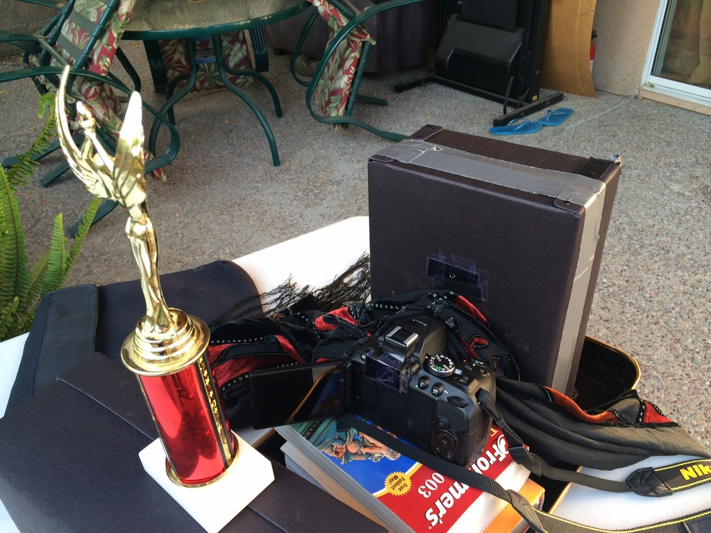

The purpose of this project was to build a pinhole camera and take pictures with it, to learn about the differences that parameters such as pinhole diameter and exposure time can make on the quality of the final image.
For my project, I used a Nikon DSLR camera and pretty much followed the specs to a tee. I initially had an issue where light was leaking into my shoebox through empty space around the edges of the hole for the camera's aperture. However, I remedied this by wrapping a towel around that area, the blue one shown in the last picture below. For switching the pinhole diameter, I simply taped on replaceable black cards with a pinhole over a bigger hole in the side of the box. This made it very easy to switch out between pinhole diameters. All pictures I took were with aperture size set to 4f. Unfortunately, a limitation of my camera was that it refused to go beyond an exposure time of about 25 seconds; exposure times are specified underneath each image. I used pinhole diameters of 1mm, 3mm, and 5mm, measured using a ruler.
Pictures of construction :)
Pictures from camera obscura!
Comparing different pinhole diameters:
From these comparisons, it becomes clear that the larger the pinhole diameter, the more light comes into the camera and the brighter and blurrier the resulting image is. Smaller pinhole diameters lead to more crisp images because since the light must come in through a small hole, the range of angles of incidence is reduced; therefore, the rays do not spread out as much within the box, which creates sharp images. Also, as a result of these pictures, I found that increasing the exposure time vastly improves image quality for the smaller pinhole diameters. The following pictures of the stop sign, taken with the 1mm and 3mm pinhole diameters, illustrate this difference. The picture with the lower exposure time is dimmer and less clear because a good amount of light has not had sufficient time to enter the pinhole camera. However, there is not a big impact for larger pinhole diameters, such as 5mm, because sufficient light already enters the camera even with a lower exposure time.
Miscellaneous pictures with 5mm, which I considered to be the highest-quality pictures because they were bright (all exposure times are 8 sec):
1. I tried my hand at light painting in a dark room, and the results were very successful!